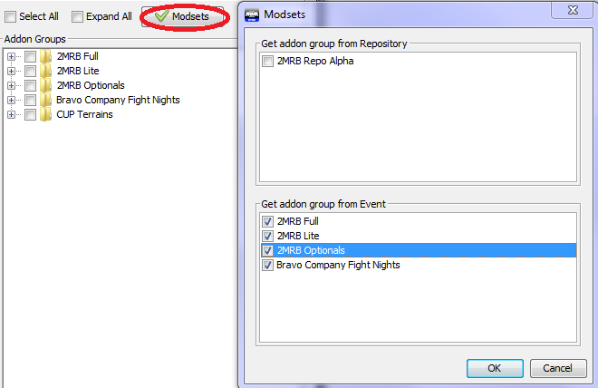

A neat feature of Arma3Sync is the Events system, which allows repos to define “events”, which have a selection of the mods from the repo assigned to them. These can then be imported to automatically create mod groups for these events.
To import events, simply click the “Modsets” button at the top of your mod groups pane, check the boxes of whichever ones you want to import and hit “OK”. They will be automatically added.
The modsets we have on our repo at the moment are as follows:
Important Note: As mentioned previously, none of these include CUP Terrains. You will have to add that yourself.
This is simply all of the required mods that we run with on a regular basis. You’ll probably have this group active most of the time.
This is a cut-down version of the required modset, that may be used for certain ops. You should never have this and “2MRB Full” active at the same time.
This contains all of the optional mods that are included in the repo. Naturally, this means that you’re free to open it up to pick and choose which ones you want active. Feel free to also remove (you can either right-click it, or just hit “delete” when selecting a mod) the ones you don’t use from the group; this way, you’ll be able to quickly select them by just selecting the group instead of having to select each mod every time.